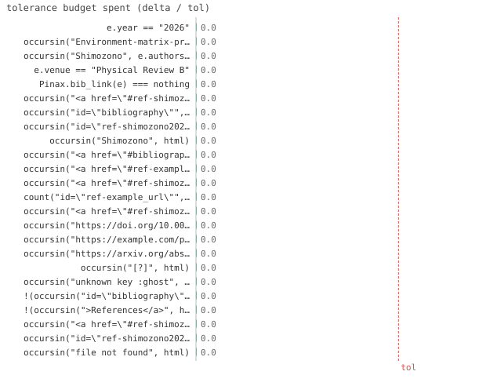

24/24 passed · 2.26s
| id | label | got | want | Δ vs tol (kind) | |
|---|---|---|---|---|---|
| ✓ | t168 | e.year == "2026" @ test_cite.jl:55 code | 1.0 | 1.0 | 0.0 vs 0.5 (abs) |
| ✓ | t169 | occursin("Environment-matrix-product operator", e.title) @ test_cite.jl:56 code | 1.0 | 1.0 | 0.0 vs 0.5 (abs) |
| ✓ | t170 | occursin("Shimozono", e.authors) && occursin("Hotta", e.authors) @ test_cite.jl:57 code | 1.0 | 1.0 | 0.0 vs 0.5 (abs) |
| ✓ | t171 | e.venue == "Physical Review B" @ test_cite.jl:58 code | 1.0 | 1.0 | 0.0 vs 0.5 (abs) |
| ✓ | t172 | Pinax.bib_link(e) === nothing @ test_cite.jl:59 code | 1.0 | 1.0 | 0.0 vs 0.5 (abs) |
| ✓ | t173 | occursin("<a href=\"#ref-shimozono2026environment\">[1]</a>", html) @ test_cite.jl:71 code | 1.0 | 1.0 | 0.0 vs 0.5 (abs) |
| ✓ | t174 | occursin("id=\"bibliography\"", html) @ test_cite.jl:72 code | 1.0 | 1.0 | 0.0 vs 0.5 (abs) |
| ✓ | t175 | occursin("id=\"ref-shimozono2026environment\"", html) @ test_cite.jl:73 code | 1.0 | 1.0 | 0.0 vs 0.5 (abs) |
| ✓ | t176 | occursin("Shimozono", html) @ test_cite.jl:74 code | 1.0 | 1.0 | 0.0 vs 0.5 (abs) |
| ✓ | t177 | occursin("<a href=\"#bibliography\">References</a>", html) @ test_cite.jl:75 code | 1.0 | 1.0 | 0.0 vs 0.5 (abs) |
| ✓ | t178 | occursin("<a href=\"#ref-example_url\">[1]</a>", html) @ test_cite.jl:87 code | 1.0 | 1.0 | 0.0 vs 0.5 (abs) |
| ✓ | t179 | occursin("<a href=\"#ref-shimozono2026environment\">[2]</a>", html) @ test_cite.jl:88 code | 1.0 | 1.0 | 0.0 vs 0.5 (abs) |
| ✓ | t180 | count("id=\"ref-example_url\"", html) == 1 @ test_cite.jl:89 code | 1.0 | 1.0 | 0.0 vs 0.5 (abs) |
| ✓ | t181 | occursin("<a href=\"#ref-shimozono2026environment\">Shimozono and Hotta</a>", html) @ test_cite.jl:101 code | 1.0 | 1.0 | 0.0 vs 0.5 (abs) |
| ✓ | t182 | occursin("https://doi.org/10.0000/example.doi", html) @ test_cite.jl:115 code | 1.0 | 1.0 | 0.0 vs 0.5 (abs) |
| ✓ | t183 | occursin("https://example.com/pat", html) @ test_cite.jl:116 code | 1.0 | 1.0 | 0.0 vs 0.5 (abs) |
| ✓ | t184 | occursin("https://arxiv.org/abs/0000.00001", html) @ test_cite.jl:117 code | 1.0 | 1.0 | 0.0 vs 0.5 (abs) |
| ✓ | t185 | occursin("[?]", html) @ test_cite.jl:129 code | 1.0 | 1.0 | 0.0 vs 0.5 (abs) |
| ✓ | t186 | occursin("unknown key :ghost", html) @ test_cite.jl:130 code | 1.0 | 1.0 | 0.0 vs 0.5 (abs) |
| ✓ | t187 | !(occursin("id=\"bibliography\"", html)) @ test_cite.jl:142 code | 1.0 | 1.0 | 0.0 vs 0.5 (abs) |
| ✓ | t188 | !(occursin(">References</a>", html)) @ test_cite.jl:143 code | 1.0 | 1.0 | 0.0 vs 0.5 (abs) |
| ✓ | t189 | occursin("<a href=\"#ref-shimozono2026environment\">[1]</a>", html) @ test_cite.jl:156 code | 1.0 | 1.0 | 0.0 vs 0.5 (abs) |
| ✓ | t190 | occursin("id=\"ref-shimozono2026environment\"", html) @ test_cite.jl:157 code | 1.0 | 1.0 | 0.0 vs 0.5 (abs) |
| ✓ | t191 | occursin("file not found", html) @ test_cite.jl:169 code | 1.0 | 1.0 | 0.0 vs 0.5 (abs) |

⤓ downloadbib = Pinax.parse_bib(bibpath)
e = bib[:shimozono2026environment]
@test e.year == "2026"@test occursin("Environment-matrix-product operator", e.title)@test occursin("Shimozono", e.authors) && occursin("Hotta", e.authors)@test e.venue == "Physical Review B"@test Pinax.bib_link(e) === nothing # no DOI/URL/eprint in the source -> no linkPinax.reset!()
html = read(Pinax.render(; out=site("c1")), String)
@test occursin("<a href=\"#ref-shimozono2026environment\">[1]</a>", html)@test occursin("id=\"bibliography\"", html)@test occursin("id=\"ref-shimozono2026environment\"", html)@test occursin("Shimozono", html)@test occursin("<a href=\"#bibliography\">References</a>", html) # nav linkPinax.reset!()
html = read(Pinax.render(; out=site("c2")), String)
@test occursin("<a href=\"#ref-example_url\">[1]</a>", html) # first -> 1@test occursin("<a href=\"#ref-shimozono2026environment\">[2]</a>", html) # second -> 2@test count("id=\"ref-example_url\"", html) == 1 # dedupedPinax.reset!()
html = read(Pinax.render(; out=site("c3")), String)
@test occursin(
"<a href=\"#ref-shimozono2026environment\">Shimozono and Hotta</a>", html
)Pinax.reset!()
html = read(Pinax.render(; out=site("c4")), String)
@test occursin("https://doi.org/10.0000/example.doi", html)@test occursin("https://example.com/pat", html)@test occursin("https://arxiv.org/abs/0000.00001", html)Pinax.reset!()
html = read(Pinax.render(; out=site("c5")), String)
@test occursin("[?]", html)@test occursin("unknown key :ghost", html)Pinax.reset!()
html = read(Pinax.render(; out=site("c7")), String)
@test occursin("<a href=\"#ref-shimozono2026environment\">[1]</a>", html)@test occursin("id=\"ref-shimozono2026environment\"", html)Pinax.reset!()
html = read(Pinax.render(; out=site("c8")), String) # must not throw
@test occursin("file not found", html){kind=link}